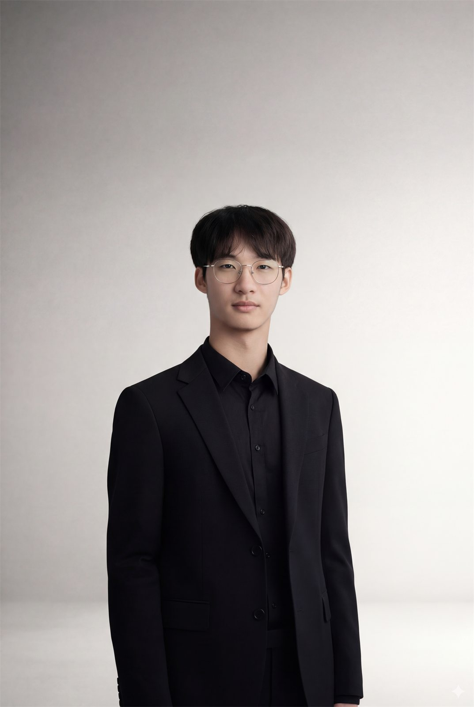
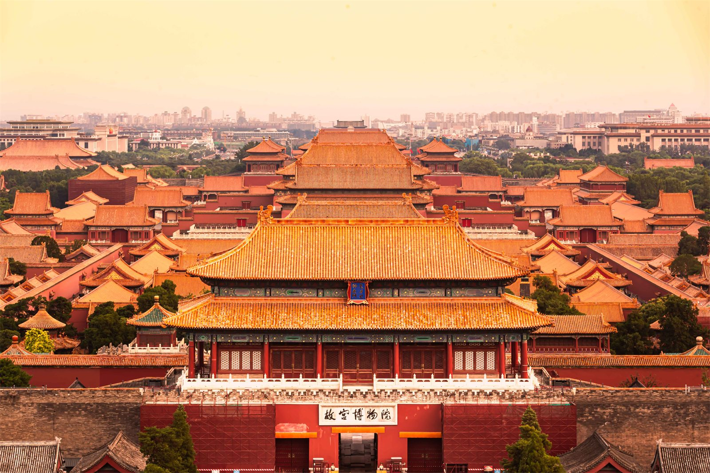
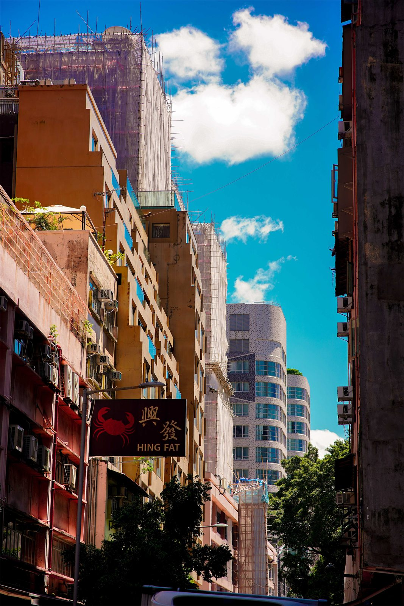
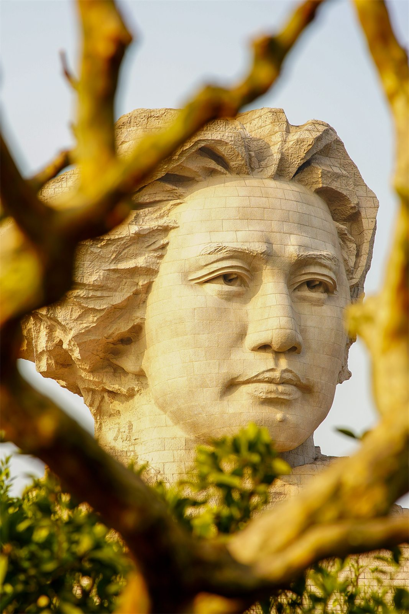
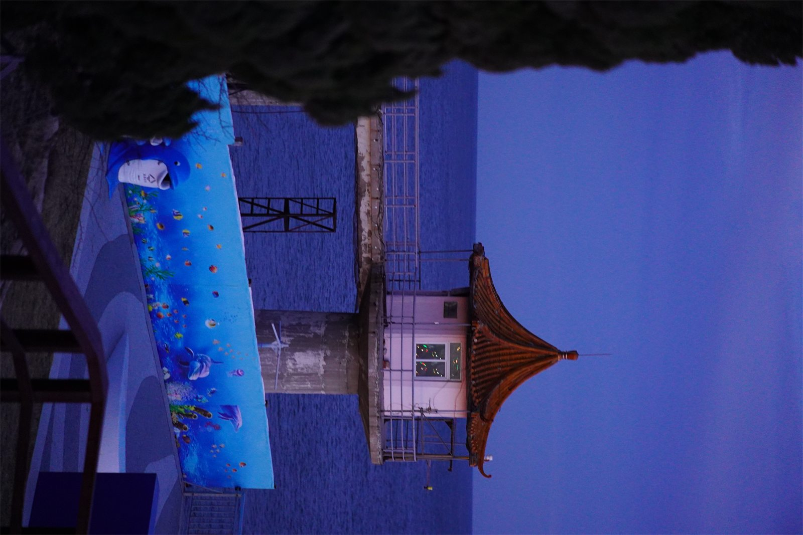

Guangdong University of Foreign Studies
黎浩明
金融工程专业学生 / 新闻中心负责人 / 摄影爱好者
在金融工程、量化研究、学生组织与影像表达之间持续探索，用数据理解市场，也用镜头记录现场。

About
关于我
我关注金融科技、资本市场与公共表达，也重视把专业学习转化为真实项目里的执行力。
学习与研究
金融工程专业背景，课程覆盖计量经济学、公司金融、金融经济学、量化投资与 Python。具备 Stata 实证回归、数据处理和论文框架搭建经验。
学生工作
担任金融学院团委新闻中心正部长，负责活动拍摄、新闻稿制作与宣传策划，也在模拟联合国协会参与大型会议筹办。
摄影表达
长期参与校园活动、会议现场与旅行场景的影像记录，关注光线、秩序和人物状态，让影像服务于叙事与传播。
社会实践
参与暑期“百千万工程”社会实践，在调研、拍摄、材料整理和成果传播中连接专业能力与基层观察。
Education
教育背景
广东外语外贸大学金融学院，金融工程专业，本科在读。
2023.09 - 2027.07
广东外语外贸大学 · 金融学院
金融工程专业，GPA 3.68/4.0。主修课程包括高等代数、Python、计量经济学、公司金融、金融经济学、量化投资等。
Python 96
计量经济学 94
公司金融 95
量化投资 100
查看英文成绩单
语言能力
大学英语四级 506，雅思 6.5。
专业技能
Python 良好，Stata 熟练，能够完成数据清洗、面板回归、稳健性检验与结果解释。
Research & Competition
科研/竞赛经历
从实证研究到金融科技竞赛，训练数据分析、模型构建、结果表达与答辩呈现。
2025.04 - 2026.04
大学生创新创业训练计划 · 核心成员
参与论文《ESG表现与企业市场价值：来自中国资本市场的经验证据》，负责数据收集、处理及 Stata 实证回归分析，协助确定论文主体框架。
研究基于沪深300非金融类上市公司 2018-2024 年数据，使用固定效应模型、稳健性检验与工具变量法，分析 ESG 表现对企业价值的影响及行业、企业特征异质性。
查看论文成果
2025.11 - 2025.12
第五届“点宽杯”全国高校金融科技黑客松大赛一等奖
构建涵盖估值、盈利能力、成长性与动量等维度的因子体系，并在回测阶段关注年化收益、信息比率与最大回撤等指标；参与答辩 PPT 制作与演讲。
Student Work
学生工作
围绕组织协调、内容传播与大型活动执行，形成稳定的项目推进能力。
2024.09 - 2025.07
广外金融学院团委新闻中心 · 正部长
管理部门拍摄、新闻稿制作与活动安排，参与策划摄影征集、大四毕业晚会开场视频等内容项目。
2024.09 - 2026.07
广外模拟联合国协会 · 行政部副部长 / 宣传部副部长
负责与学院领导及相关部门对接活动事宜，统筹会务安排与资源协调；同时负责活动拍摄与宣传物料制作，参与第16届、第17届广外模拟联合国大会筹办。
Campus Media
校园影像与宣传项目
围绕活动现场、人物采访、会议传播等场景进行内容采集和视觉呈现，兼顾新闻表达和组织传播效率。
Honors
荣誉奖项
奖学金、综合荣誉、竞赛奖项与实践成果。
Photography
摄影作品
记录城市、建筑、旅途与公共空间中的光线和秩序。






Social Practice
社会实践
将调研、影像记录和内容传播结合起来，完成从现场观察到成果表达的闭环。
2024 暑期
“百千万工程”暑期社会实践
参与基层调研、视频拍摄、材料整理与成果传播，围绕地方文化、产业观察与青年实践进行内容输出，并获评暑期百千万实践活动优秀个人。
视频作品《含情明城 光沐沧江》记录实践过程与地方观察，呈现社会实践中的人物、场景与叙事线索。
Contact
联系方式
欢迎通过邮箱联系我。